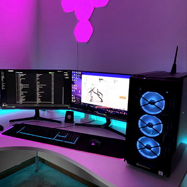
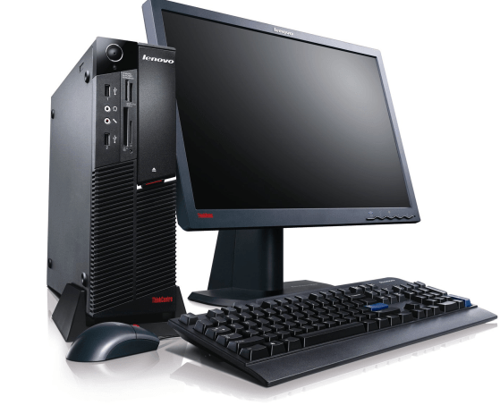

Komputer moją pasją - Oprogramowanie |
|
Oprogramowanie komputeroweOprogramowanie to kluczowy element każdego komputera. Bez niego nawet najlepsze podzespoły nie są w stanie działać. Oprogramowanie dzieli się na systemy operacyjne, takie jak Windows, Linux, czy macOS, oraz aplikacje, które wykonują konkretne zadania. Najważniejszym elementem jest system operacyjny, który zarządza wszystkimi zasobami komputera, takimi jak procesor, pamięć i urządzenia peryferyjne. Na system operacyjny nakładają się aplikacje, np. przeglądarki internetowe, edytory tekstu, a także gry komputerowe. Niektóre programy, takie jak antywirusy, są niezbędne do zapewnienia bezpieczeństwa danych. Inne, np. edytory graficzne, pozwalają użytkownikowi na twórczą pracę na komputerze. |
Galeria  |
|
© 2024 Jan Kowalski. Wszelkie prawa zastrzeżone. |
|